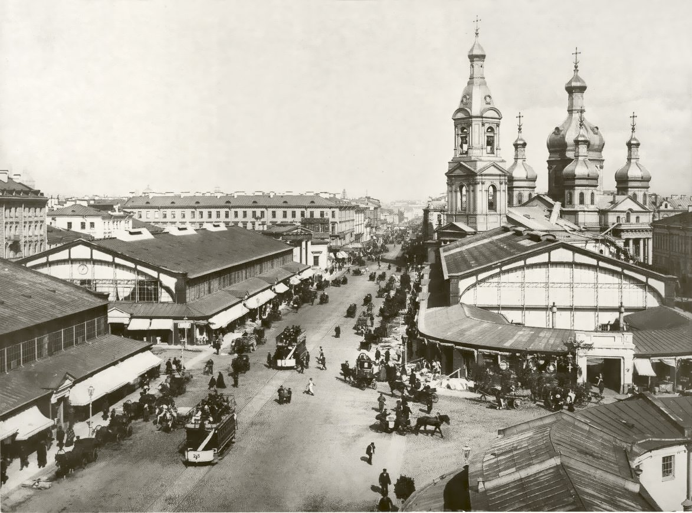
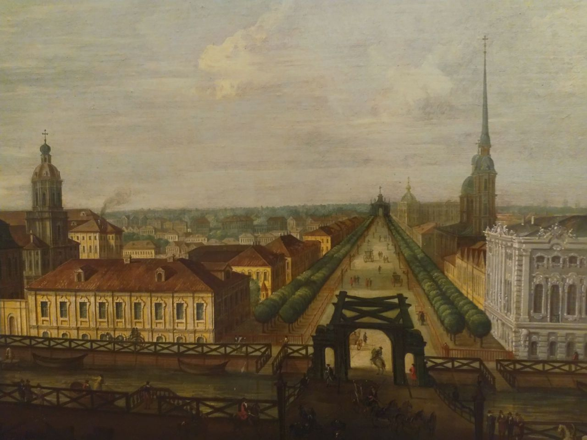
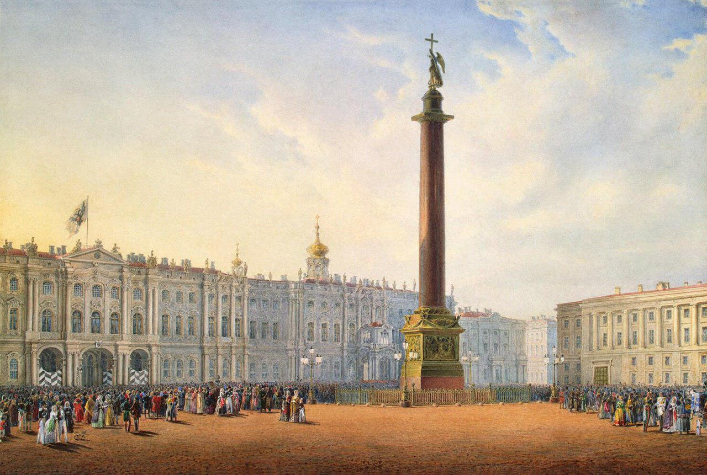
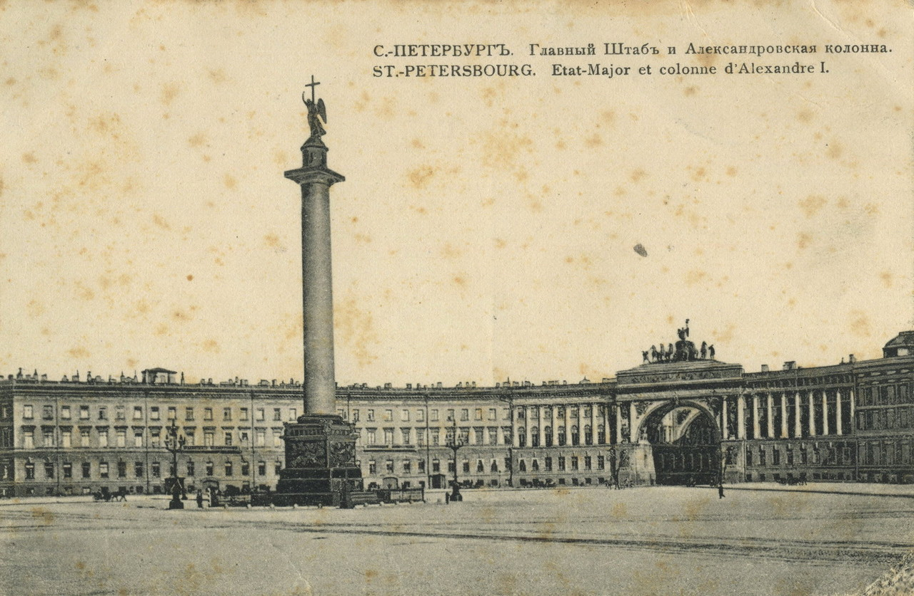
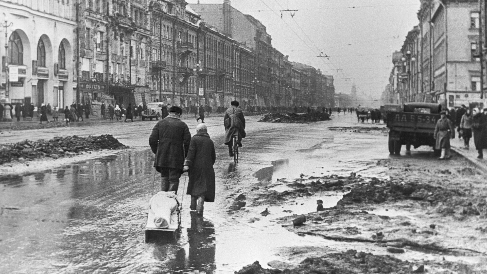

Это слово буквально пропитано историей, здесь жили Достоевский и Гоголь,готовился к революции Ленин, родился Виктор Цой и погиб на дуэли Александр Пушкин.
История Санкт-Петербурга началась в 1703 году – именно тогда, 27 мая, Пётр Первый основал будущую Северную Столицу на землях, отвоёванных у Швеции. Назван город в честь апостола Петра.
Первой питерской постройкой стала Петропавловская крепость, заложенная на Заячьем острове. Территория современного Петербурга была сильно заболоченной, для строительства болота осушались.
Географическое расположение города послужило причиной того, что в истории Санкт-Петербурга неоднократно случались наводнения, которые приводили к значительным жертвам и разрушениям. Самое сильное наводнение было зафиксировано в ноябре 1824 года (уровень воды поднялся на 4 метра 21 сантиметр), также сильные наводнения происходили в восемнадцатом веке (1724 и 1777 годы) и в двадцатом веке (1924 год).
Для того, чтобы быстрее строились каменные дома, Пётр Первый ввёл каменный налог – каждому приезжему необходимо было сдать на въезде в город какое-то количество камня или равноценную сумму денег.
В 1712 году в истории Санкт-Петербурга произошло событие, которое сыграло решающую роль в его дальнейшем развитии – Питер стал столицей России вместо Москвы. Самое интересное, что официального указа о переносе столицы из Москвы в Санкт-Петербург так и не было издано – в Питер просто был переведён весь царский двор и официальные ведомства. Столичным статусом Санкт-Петербург обладал до 1918 года.
В 1724 году была создана Петербургская Академия Наук. В 1825 году на Сенатской площади Санкт-Петербурга произошло восстание декабристов. В 1837 году именно в Петербурге была открыта первая в России железная дорога. В связи с тем, что на заработки в Санкт-Петербург приезжало очень большое количество крестьян, размеры города и численность его населения сильно увеличились, и к концу девятнадцатого века Питер стал одним из крупнейших промышленных городов не только России, но и Европы.
В 1905 году в Санкт-Петербурге началась первая русская социалистическая революция. В 1907 году на главную улицу Санкт-Петербурга выехал первый автобус, называвшийся тогда омнибус-мотором. В 1914 году Николай Второй переименовал Санкт-Петербург в Петроград, так как на фоне шедшей в это время Первой мировой войны все названия, носящие оттенок «неметчины» вызывали резко негативную реакцию.
В 1917 году обе революции – февральская и октябрьская – также брали своё начало в Санкт-Петербурге, хотя, в итоге, после революций и прихода советской власти, этот город перестал быть российской столицей.
Это случилось потому, что политический климат Санкт-Петербурга, так же, как и его природный климат, оказался очень нестабильным. Вначале переезд нового правительства виделся как временная мера, но – факт остаётся фактом – именно с тех пор Москва вновь стала и остаётся до сих пор столицей России. В 1924 году Петроград был переименован в Ленинград.
С 8 сентября 1941 до 27 января 1944 года продолжалась блокада Ленинграда, во время которой город с остальной страной связывала лишь Дорога Жизни, которая проходила через Ладожское озеро. Из-за постоянных бомбёжек до города добирался лишь каждый третий грузовик. Жертвами блокады стали около восьмисот тысяч ленинградцев.
После снятия блокады Ленинград первым среди русских городов был удостоен звания Города-Героя. В послевоенные годы происходило активное восстановление Ленинграда.

Историческое название – Санкт-Петербург – было возвращено городу в сентябре 1991 года. В настоящее время Санкт-Петербург носит негласный статус Культурной столицы России, что вполне обоснованно – тридцать шесть культурно-исторических комплексов Питера включены в список исторического наследия ЮНЕСКО, в городе постоянно функционируют более двухсот музеев, двух тысяч библиотек, восемьдесят театров и множество других учреждений культуры.